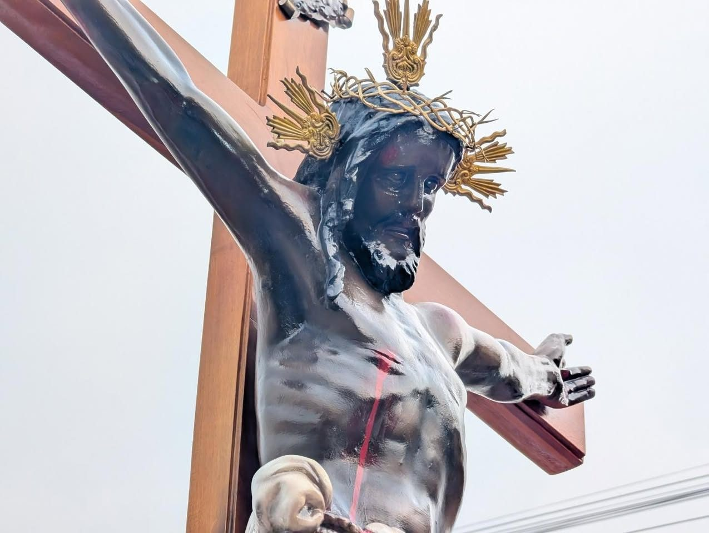
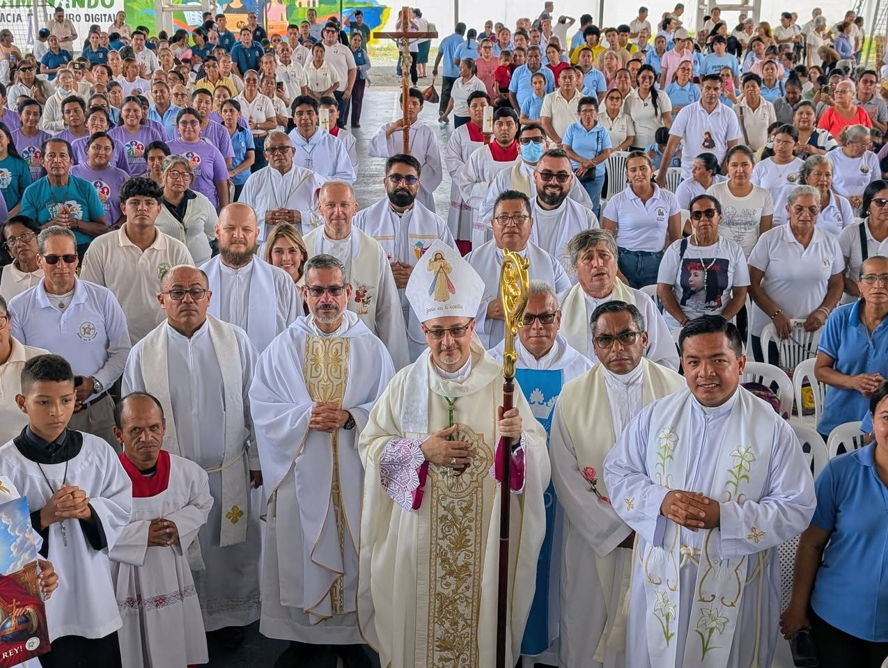

5 sep 2026 · Pastoral Juvenil
«¡La juventud de la Diócesis de Daule es una juventud alegre y llena de esperanza!»
4.º Encuentro Juvenil Diocesano. Ver las fotos
¡Alabado sea Jesucristo!
Treinta parroquias entre el río Daule y los arrozales del Guayas. Una diócesis joven, nacida en 2022, que sale a tu encuentro.

Cada pieza es una parroquia; cada color, una zona. Encuentra la tuya

Esta semana
Viernes 13
Nueve días, del 13 al 21 de noviembre, en todas las parroquias. La diócesis pone a tu disposición la novena oficial.
Descargar la novenaEl camino del discípulo misionero tiene cuatro momentos. Nadie empieza por el final.
 Encuéntrate con Cristo
Dios te ama con amor eterno y personal.
El kerigma en cinco pasos
Encuéntrate con Cristo
Dios te ama con amor eterno y personal.
El kerigma en cinco pasos
 Vuelve a casa
Si te alejaste, la puerta sigue abierta.
Dónde confesarte
Vuelve a casa
Si te alejaste, la puerta sigue abierta.
Dónde confesarte
 Crece en la fe
Sacramentos, catequesis, grupos y movimientos.
Requisitos para los sacramentos
Crece en la fe
Sacramentos, catequesis, grupos y movimientos.
Requisitos para los sacramentos
 Sal a la misión
Lo recibido se comparte.
Quiero ayudar · Necesito ayuda
Sal a la misión
Lo recibido se comparte.
Quiero ayudar · Necesito ayuda

«Que cada parroquia, cada capilla, cada grupo y cada familia se transforme en un centro de irradiación del Evangelio.»
5 sep 2026 · Pastoral Juvenil
4.º Encuentro Juvenil Diocesano. Ver las fotos

17 oct 2026 · Catequesis

10 oct 2026 · Nobol
Misa, confesiones, despacho, capillas de los recintos y fiesta patronal de cada comunidad.
De El Empalme a Samborondón y de Pedro Carbo a Salitre: 5 992 km² del norte del Guayas. Aquí estamos, ven a vernos.
 Diócesis de
Daule
Diócesis de
Daule
¡Alabado sea Jesucristo!
Treinta parroquias entre el río Daule y los arrozales. Una diócesis joven que sale a tu encuentro.
Esta semana
Viernes 13
Del 13 al 21 de noviembre, en todas las parroquias.
Descargar la novenaDesliza: son cuatro momentos del camino.
Mons. Cristóbal Kudlawiec
nuestro obispo
«Que cada parroquia, cada capilla, cada grupo y cada familia se transforme en un centro de irradiación del Evangelio.»
5 sep 2026 · Pastoral Juvenil
1 Lomas de Sargentillo · 2 Nobol · 3 Palestina